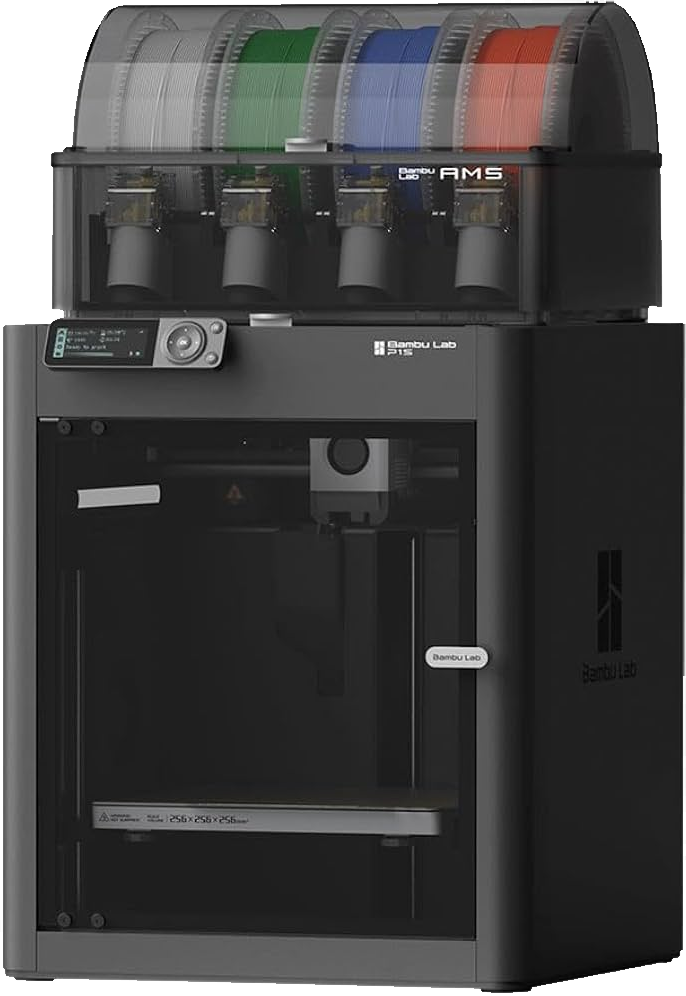
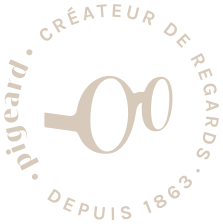

Une monture cassée ? Pour 30 €, nous en imprimons une nouvelle à la forme de vos verres, en une vingtaine de minutes. Et pour aller plus loin : une monture dessinée sur vos mesures, fabriquée sous vos yeux.
Avec la solution OOmade

Une branche qui lâche, un pont qui se brise : tant que vos verres sont intacts, nous pouvons vous dépanner sur place. Inutile de retrouver la référence de votre monture, ni même d'en rapporter tous les morceaux : ce sont vos verres qui servent de modèle.
La nouvelle face est dessinée à la forme exacte de chacun de vos verres, même s'ils ne sont pas parfaitement identiques. Vous repartez avec votre correction habituelle, sans attendre une commande — que vous soyez déjà client Pigeard ou non.
Elle est imprimée en PLA, une matière biosourcée à base d'amidon de maïs, dont la durée de vie est limitée à quelques semaines : le temps de choisir sereinement votre prochain équipement. Ses charnières sont en métal.
la monture de dépannage, imprimée à la forme des verres de votre monture cassée
Une photo au smartphone, sur une mire de calibration, suffit à mesurer précisément chaque verre.
Le logiciel redessine automatiquement la face de la monture à la forme exacte de vos verres.
La monture s'imprime sur place, puis nous remontons vos verres d'origine. En une vingtaine de minutes, vous repartez en voyant.
L'imprimante ne sert pas qu'au dépannage : elle fabrique aussi des montures définitives, conçues pour un seul visage. Écart entre les yeux, largeur et hauteur du nez, distance aux tempes, longueur des branches : la monture part de vos mesures, pas d'une taille standard.
Forme, épaisseur, couleur, finition : vous voyez votre modèle à l'écran et vous le modifiez avec nous, en direct. Puis l'impression démarre en magasin — quelques dizaines de minutes, et vous pouvez assister à sa fabrication.
Matière — PETG, un polyester technique résistant aux chocs et recyclable.
Norme — conforme à la norme ISO 12870, celle des montures de lunettes.
Vos verres — la monture est conçue autour de vos verres et de leur centrage : un atout pour les fortes corrections.
Réparable — un numéro de série imprimé dans la branche permet de réimprimer une pièce cassée à l'identique.
Nos lunettes faites main dans l'acétate du Jura, dans notre atelier de Nogent-le-Rotrou, restent notre signature. L'impression 3D ouvre une autre voie : une monture fabriquée sur place, dans la journée, pour les visages que les tailles standard habillent mal. Découvrir le sur-mesure fait main.
Une monture imprimée en magasin ne traverse pas le monde : elle parcourt quelques mètres entre l'imprimante et le comptoir.
Chaque monture n'est fabriquée qu'au moment où vous en avez besoin : pas d'expédition, pas d'invendu.
PETG pour les montures définitives, PLA biosourcé pour les montures de dépannage : les deux matières sont recyclables.
Grâce au numéro de série, une branche cassée se réimprime au lieu de remplacer toute la monture.
30 € pour la monture de dépannage, imprimée à la forme des verres de votre monture cassée.
Comptez une vingtaine de minutes pour un dépannage. Une monture définitive sur mesure demande quelques dizaines de minutes.
Le service est proposé dans nos trois magasins : Nogent-le-Rotrou, Brou et La Loupe. Il est ouvert à tous, que vous soyez déjà client Pigeard ou non.
Vos verres avant tout : ce sont eux qui servent de modèle à la nouvelle monture. Peu importe l'état de la monture d'origine ou sa référence.
Non. Vos verres d'origine sont remontés sur la monture imprimée : votre correction ne change pas.
Non, et c'est voulu : elle est imprimée en PLA, une matière biosourcée dont la durée de vie est limitée à quelques semaines, le temps de choisir votre prochain équipement.
La monture définitive est imprimée en PETG, un polyester technique résistant aux chocs, et répond à la norme ISO 12870, la norme des montures de lunettes. Un numéro de série imprimé dans la branche permet de réimprimer une pièce cassée à l'identique.
Solution OOmade · imprimante Bambu Lab P1S.
